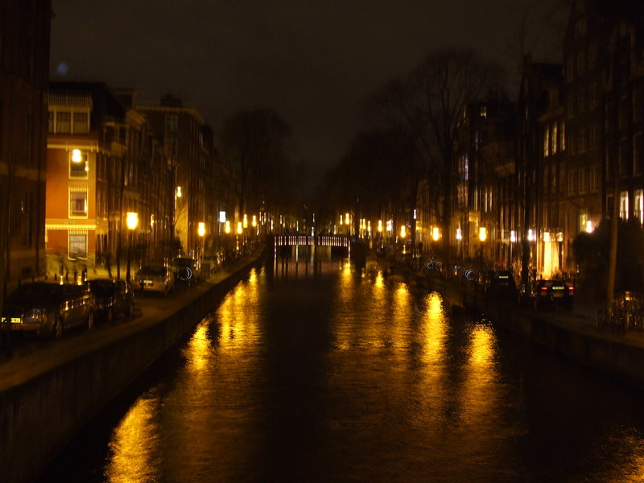

Journal | Reflectie en richting
Verhalen die dezelfde luxe rust dragen als de rest van mijn wereld.
Geen losse dump van gedachten, maar een gecureerde selectie van onderwerpen die passen bij dominantie, grenzen, communicatie, sfeer en de dynamiek achter wat je hier ziet.


Wat je hier vindt
Een rustigere laag onder de etalage.
Deze artikelen geven context aan de sfeer van de site. Ze gaan over dynamiek, vertrouwen, aanwezigheid en soms ook over plekken en symboliek die die wereld versterken.
Alles blijft bewust: helder genoeg om iets mee te doen, subtiel genoeg om ruimte te laten voor je eigen interpretatie.
Onderwerpen
- Dominantie, overgave en vertrouwen
- Grenzen, communicatie en nazorg
- Ritueel, sfeer en mentale focus
- Reflecties die passen bij de wereld van Isla
14 april 2026 | Persoonlijke groei
De kunst van dominantie: inzicht in mijn praktijk
Over vertrouwen, afstemming en waarom echte leiding net zo veel met aandacht als met controle te maken heeft.
Lees artikel5 maart 2026 | Reizen
Het avontuur van de Nederlandse molens
Een reflectie op ritme, water, wind en waarom bepaalde landschappen zo goed passen bij verstilling en focus.
Lees artikel22 februari 2026 | Reflectie
Waarom grenzen stellen essentieel is voor vrijheid
Heldere grenzen maken overgave niet kleiner, maar juist sterker, veiliger en dieper voelbaar.
Lees artikel10 januari 2026 | Educatie
Vier misvattingen over dominantie ontkracht
Een korte correctie op bekende clichés rond dominantie, pijn, seksualiteit en macht.
Lees artikel28 december 2025 | Communicatie
Een gids voor respectvolle communicatie in BDSM
Praktische uitgangspunten voor gesprekken die vooraf, tijdens en na een sessie het verschil maken.
Lees artikel